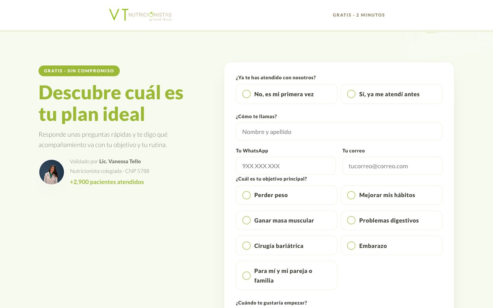

Comercial
Para que lleguen más pacientes.
Administrativo
Para tener todo en orden.
Para empezar
Lo primero que conviene leer.
Para empezar
La rutina de cada mañana
En el portal, pestaña Tareas. Si estos números bajan a cero, el equipo está al día.
- Confirmar citas: enviar el recordatorio de las próximas.
- ¿Vino a su cita?: marcar «Asistió» o «No asistió».
- Cobrar: pedir el pago de las citas pendientes.
- Seguimiento → Le toca hoy: escribir a los pacientes en control.
Comercial
Test «Descubre tu plan»
Para qué sirve: atraer a quien todavía no sabe qué necesita. Responde preguntas y recibe una recomendación y la guía de recetas.
descubre.vanessatello.com.pe
Cómo se usa: pon este link en tu biografía y en tus historias. Quien lo llena entra solo a Kommo con sus datos.
Reserva online
Para qué sirve: que la paciente elija su cita sin esperar a que le respondan.
descubre.vanessatello.com.pe/reservar.html
- Elige con quién: la Lic. Vanessa u otra nutricionista del equipo.
- Elige presencial o virtual.
- Elige día y hora: solo aparecen los que tienen espacio.

La reserva aparece en el portal del equipo.
Kommo
Para qué sirve: es donde caen todas las conversaciones de WhatsApp, Instagram, Facebook y TikTok, y los datos de cada persona interesada.
vanetello.kommo.com- Chats: para leer y responder las conversaciones.
- Leads: cada persona interesada, como una tarjeta dentro de un embudo.
- Etiquetas: marcas en cada tarjeta. sin-bot hace que el bot no le responda a esa persona.
Las pantallas de Kommo las vemos en la capacitación del viernes.
Bot de redes
Para qué sirve: responder al instante los mensajes directos de Instagram, Facebook y TikTok.
- Responde solo mensajes directos. No responde comentarios ni historias.
- Usa tus textos aprobados y tus preguntas frecuentes.
- Si alguien del equipo está conversando con esa persona, no interrumpe.
- Las dudas clínicas, los pagos y los reclamos no los responde: quedan para el equipo.
Tú no tienes que hacer nada. Para que no le responda a alguien, ponle la etiqueta sin-bot en Kommo.
Asistente de WhatsApp · en prueba
Para qué sirve: responder en el número de Sheilla cuando ella no está (lunes, miércoles y viernes fuera de 9:30 a 11:30; martes y jueves fuera de 8 a 18; fines de semana).
- Da precios, resuelve dudas y pasa el link de reserva.
- No confirma citas ni pagos: eso lo sigue haciendo Sheilla.
- Los casos delicados los deja para Sheilla.
Aquí puedes conversar con él como si fueras una paciente. No se envía nada a nadie. Se prende cuando apruebes sus respuestas.
Mensajes de seguimiento · en prueba
Para qué sirve: volver a escribir a quien recibió el link por redes y no siguió.
- Primer mensaje a las 3 horas y segundo a las 20 horas.
- El tercero solo si la persona vuelve a escribir: Meta permite escribir solo hasta 24 horas después de su último mensaje.
- Se detiene si la persona responde, tiene una cita o la atiende el equipo.
Hoy solo registra lo que enviaría. Se prende cuando apruebes los textos.
Administrativo
Portal del equipo
Para qué sirve: el día a día de citas, cobros y seguimiento. Se entra con la clave del equipo.
portal.vanessatello.com.pe/equipo.htmlLas capturas son del modo práctica: los pacientes son inventados. Para practicar sin miedo, entra por el modo práctica: nada se guarda.
Tareas
Lo que toca hacer hoy. Elige una lista a la izquierda, toca el botón y la paciente sale de la lista.

¿Vino a su cita?
Son citas confirmadas que ya pasaron y nadie marcó. Si no se marcan, los reportes y el seguimiento quedan incompletos. Quien no vino pasa a «Reagendar».

Calendario
Toda la agenda por día, semana o mes. Con «Abrir horario» y «Bloquear agenda» manejas tu disponibilidad.

Nueva cita
Botón verde arriba. Busca a la paciente, elige modalidad, fecha, hora y servicio, y guarda.

Seguimiento
Pacientes en control: a quién le toca hoy, quién está en riesgo, y los botones «Escribir / anotar» y «Agendar seguimiento».

Cobros
Citas por cobrar o con saldo, pagadas, clínicas por cobrar y paquetes. Con «Enviar datos de pago» le llega el mensaje listo a la paciente.

Para más detalle de cada botón, está el manual del portal.
Descargar el Excel
- Entra a Cobros → Informe de ventas.
- Filtra por fechas, pago, modalidad, profesional, estado o servicio.
- Toca Descargar Excel y ábrelo con doble clic.

Tu reporte mensual, hoja por hoja
| Hoja de tu Excel | Dónde está ahora |
|---|---|
| Reporte de citas | Cobros → Informe de ventas → Descargar Excel |
| Resumen del mes | Pestaña Reportes |
| Citas Avendaño y pre/post Avendaño | En el Excel, filtra por «Quién paga» o «Llega por». Falta el formato exacto que pide la clínica. |
| Citas Dr. Salazar - Ximena | En el Excel, filtra por «Llega por» y «Profesional». |
Reportes
Para qué sirve: ver cómo va el mes sin pedírselo a nadie. Última pestaña del portal, con la misma clave.
portal.vanessatello.com.pe/informes.html- Resumen: consultas atendidas (contigo y con el equipo), pacientes nuevos, cobrado y por cobrar.
- Embudo: conversaciones, mensajes directos, cuántos recibieron el test o el link de reserva, cuántos llenaron, citas y pacientes nuevos.
- ¿Cómo llegaron?: redes, referidos, clínica o médicos.
Cómo leerlo: mira dónde cae más el embudo. Ahí está la acción de la semana.
Correos automáticos
- Reporte diario, 8:00 a. m.: nuevos, citas del día y embudo.
- Conversaciones sin responder, 8:30 a. m. y 8:30 p. m.: quién espera respuesta.
Llegan a vanetello@vanessatello.com.pe. Si no los ves, revisa la carpeta de spam.
Plataforma de pacientes
Para qué sirve: que cada paciente vea su próxima cita y su seguimiento sin preguntarle a nadie.
portal.vanessatello.com.pe/cliente.html

Ejemplo con una paciente inventada.
Entra con su DNI. Si todavía no tiene ficha cargada, le sale que no se encontró. El peso no se muestra porque bastaría el DNI para verlo.
Qué está listo y qué sigue
| Qué | Estado | Siguiente paso |
|---|---|---|
| Portal, reportes, correos, test, reserva y plataforma de pacientes | Funcionando | Capacitación del viernes |
| Bot de redes | Funcionando | Revisar sus respuestas cada semana |
| Juntar en Kommo el lead del test con su chat | Funcionando | Ninguno |
| Asistente de WhatsApp | En prueba | Vanessa prueba y aprueba las respuestas |
| Mensajes de seguimiento | En prueba | Vanessa aprueba los 3 textos |
| Separar en Kommo el número API del de Sheilla | Falta | Lo vemos en la capacitación |
| Links en tu página web | Falta | Quien maneja tu web los coloca |
| Calendario de Google y correos a pacientes | Falta | Respuesta de Sandro |
Todos tus links
| Para qué | Link |
|---|---|
| Portal del equipo | portal.vanessatello.com.pe/equipo.html |
| Reportes | portal.vanessatello.com.pe/informes.html |
| Probar el asistente | portal.vanessatello.com.pe/probar-asistente.html |
| Pacientes | portal.vanessatello.com.pe/cliente.html |
| Reservar cita | descubre.vanessatello.com.pe/reservar.html |
| Test Descubre | descubre.vanessatello.com.pe |
| Recetario | descubre.vanessatello.com.pe/recetas.html |
| Kommo | vanetello.kommo.com |